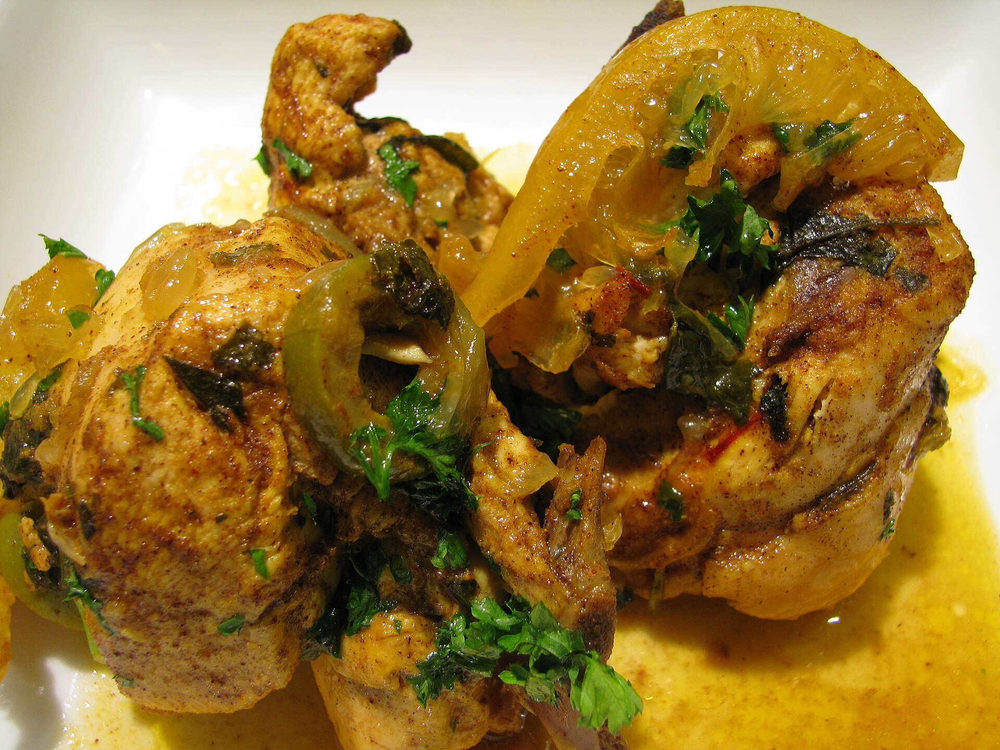
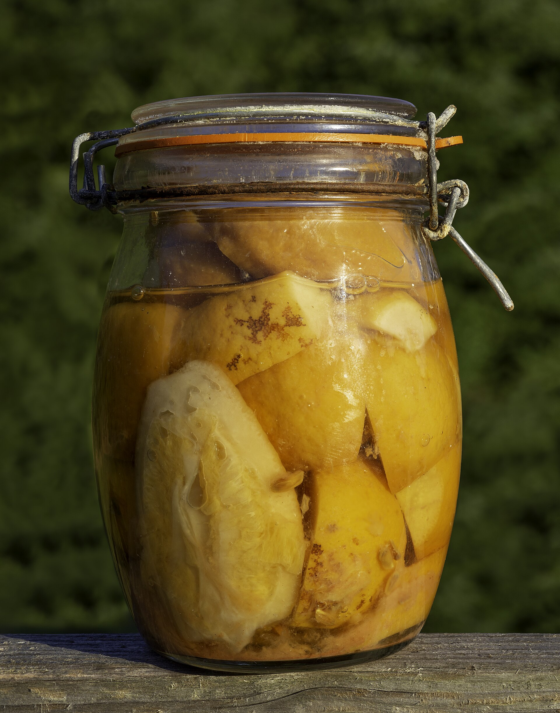
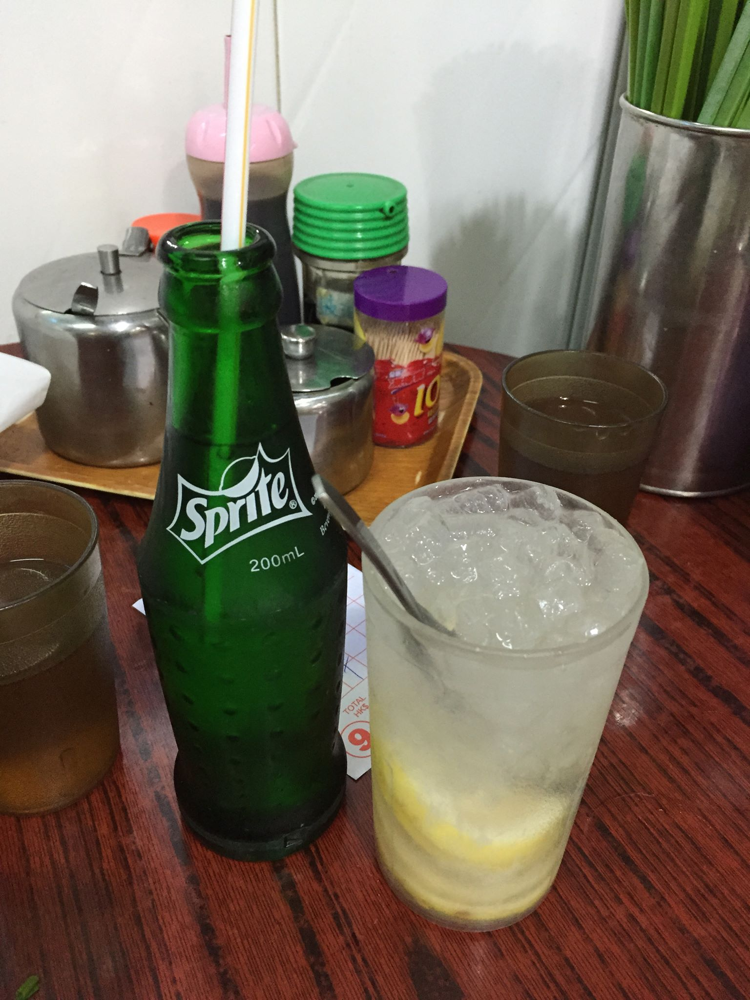

半線鹹酸甜・鹽漬組講義
摩洛哥醃檸檬
一顆檸檬、一把鹽、一個玻璃罐。八百多年前，埃及一位宮廷醫師寫下的做法，和你今天在教室裡動手做的，幾乎一模一樣。

01為什麼要醃一顆檸檬？
過去無冷藏設備的歲月，全球不同文化的人類社群因應不同季節盛產的農作物，為了避免浪費（在那些食物非常珍貴的年代，這是至關重要之事！），發展出了許多保存食物的技能。這些不同的保存方法，也豐富了飲食文化，成為一種深刻的文化實踐。您可以觀察日本人對味噌湯、韓國人對泡菜的感情，就可以體會。
今日每個人家裡都有一台冰箱，食物取得的低代價，都讓我們漸漸失去了過去人們跟著時令製作各種保存食物的習慣。但是想想，丟掉放到壞掉的蔬菜水果固然不會使你下個月餓肚子，但是若能透過前人的方法將食物保存起來，減少浪費之餘，還能增添味蕾的享受，又不用擔心現成加工食品眼花撩亂的添加物，是不是也不賴呢？
換個角度想：冰箱讓我們不必再跟季節「談判」。以前的人知道，檸檬在某幾個月會一口氣大量成熟、吃不完，接下來又有好幾個月吃不到；所以盛產的時候，就得想辦法把它留到缺乏的時候。今天的台灣，檸檬主要種在屏東（全國約八成的檸檬園在屏東縣，九如鄉產量全台第一），自然的盛產期在夏天，但經過產期調節，一年四季都買得到。季節還在，只是被我們的冷藏、運輸與產期調節「抹平」了。
你家冰箱裡，現在有沒有一樣東西，再過幾天就會被丟掉？如果沒有冰箱，你的阿公阿嬤會怎麼處理它？
02一份八百年的食譜
目前所知最早把「鹽醃檸檬」寫下來的人，是 12 世紀埃及的猶太裔醫師伊本・朱麥（Ibn Jumayʿ）。他是蘇丹薩拉丁（Saladin）宮廷的首席醫師，卒於 1198 年，寫過一篇專門討論檸檬的論文〈論檸檬：它的飲用與用途〉。
他的做法大意是：挑選完全成熟、顏色鮮黃的檸檬，把它切開但不要切斷，在切口塞進鹽，放進罐子裡，再用檸檬汁淹過，至少放四十天。研究食物史的人常說，後來的作者幾乎都在抄他的方法——你今天講義上的步驟「將檸檬切十字但是不切斷、將鹽灑入檸檬缺口」，就是八百年前的這一句。
檸檬本身也是一位長途旅行者。2018 年發表在《自然》期刊的柑橘基因體研究指出，檸檬是香櫞（citron）與酸橙雜交出來的後代，柑橘類的老家在喜馬拉雅山南麓、中國西南到東南亞一帶；檸檬隨著貿易與阿拉伯世界的農業擴張，才一路傳到地中海與北非。一顆檸檬能出現在摩洛哥的燉鍋裡，背後是好幾百年的移動。
03摩洛哥的「醃漬檸檬」
在摩洛哥阿拉伯語（Darija）裡，檸檬叫做 l'hamd，醃檸檬常被稱為 l'hamd markad 或 l'hamd mraqqed。摩洛哥人特別偏愛一種叫 beldi（意思是「本地的」）的檸檬：皮薄、香氣濃，產在南部塔魯丹特（Taroudant）一帶。
醃檸檬在摩洛哥廚房裡的地位，有點像醬油或豆腐乳之於台灣廚房：不是主角，卻是很多菜少不了的味道。最經典的吃法是塔吉鍋燉雞配橄欖與醃檸檬。要注意，摩洛哥人主要吃的是皮：果肉通常刮掉，皮沖洗後切絲或切丁，放進燉菜、沙拉或醬汁裡。


04一顆檸檬，很多種鹹
「用鹽保存檸檬」不是摩洛哥獨有的發明，而是很多地方的人各自走到的答案：
- 印度次大陸：檸檬泡菜（lemon pickle）是家常配菜，常加入辣椒、芥末籽等香料；在阿育吠陀傳統裡，也被當作腸胃不適的家庭偏方。
- 柬埔寨：用醃檸檬燉雞湯（ngam nguv），酸鹹的湯頭和摩洛哥燉雞有異曲同工之妙。
- 十八世紀的英國：當時的食譜書已經有鹽醃檸檬的做法，用來搭配鮭魚或小牛肉的醬汁。
- 香港：茶餐廳的「鹹檸七」，是把鹹檸檬放進七喜汽水裡壓碎來喝。維基百科的說法是，它大約在 1990 年代後期開始在茶餐廳出現，確切起源已經不可考；很多香港人相信它可以化痰、潤喉。

其實不用走那麼遠。台灣人的餐桌上也有很多「鹽的智慧」：菜脯、破布子、蔭瓜、鹹梅，還有客家人「一棵芥菜三種吃法」——新鮮芥菜醃成酸菜，再曬、再壓成福菜，最後曬乾成梅干菜。每多一道手續，就能多放一段時間，味道也跟著變一次。
05罐子裡發生了什麼？
藉由發酵作用來保存蔬果是人類相當古老的技巧。植物（蔬果）是某些有益微生物的天然棲所，這類生物遇上適當環境（主要指無氧環境）便能大量繁衍，並壓制其他會致病、引發腐敗的微生物。儘管有些蔬果可以單獨擺進坑穴或裝罐密封，任其發酵，然而大多數的做法是撒上乾鹽或泡入鹽水，促使植物組織釋出水、糖和其他養分，同時也提供液體來浸沒蔬果，限制蔬果和氧接觸。過程中經歷微生物群輪番上陣，初期以明串珠菌類為主，接著酸度提高，乳酸桿菌便取而代之。微生物的作用產生了揮發性酯質，讓果皮更具濃郁香氣。
Harold McGee（2009）。《食物與廚藝［蔬・果・香料・穀物］》。台北：大家出版。（原講義引文）
把這段話拆成三件事來看：
- 鹽把水「拉」出來。細胞外面的鹽濃度比細胞裡面高，水就會往外跑（滲透作用）。檸檬皮會慢慢軟化，罐子裡的汁液越來越多，最後檸檬整個泡在自己的汁裡。
- 鹽決定誰能活下來。大部分會讓食物腐敗的微生物受不了這麼鹹的環境，但耐鹽的乳酸菌可以。乳酸菌把果皮與果肉裡的糖變成乳酸，讓整罐更酸，壞菌就更難生存。美國克萊姆森大學推廣中心的說明就是這樣解釋醃檸檬為什麼「風險很低」：鹽與酸聯手，替好菌清出一塊地盤。
- 香氣是微生物的副產品。醃過的檸檬皮不再只是「酸」，而有一種圓潤、帶點花香與鹹香的味道。這不是我們刻意加進去的，而是微生物在罐子裡「工作」的結果。
為什麼要「淹過」？因為露出液面的部分接觸得到空氣，正是黴菌最喜歡的地方。這也是為什麼食譜裡要擠壓檸檬、要加檸檬汁或開水把它淹沒。
06食譜與小提醒
1. 準備程序
- 將玻璃罐洗淨，放入滾水中消毒五分鐘。小心取出，風乾。（小心燙傷！！！）
- 檸檬外表仔細刷洗乾淨。
- 食鹽準備好，刀子與砧板清洗乾淨。
2. 製作
- 將檸檬切十字但是不切斷。
- 將鹽灑入檸檬缺口。
- 先鋪一層鹽在罐底，接著將檸檬置入，略微擠壓。
- 留下 1～2 顆檸檬，擠檸檬汁加入玻璃罐。
- 加入 3 匙鹽巴，加入溫開水至醃過罐中檸檬。
3. 發酵
靜置於陰涼處一個禮拜。輕微搖晃使溶液均勻。一個禮拜後可置入冰箱。
- 檸檬一定要淹在液體下面。浮上來的檸檬可以用一顆乾淨的小石頭、小碟子或裝水的夾鏈袋壓住。
- 表面一層薄薄的白膜通常是酵母（俗稱「產膜酵母」），撈掉即可；但如果長出有顏色、毛茸茸的黴，或聞起來是腐臭味，整罐就不要吃了。
- 拿取時用乾淨、乾燥的筷子或湯匙。沾了口水或生食的器具會把別的微生物帶進罐子。
- 耐心一點。一週後可以嚐，但味道通常要三、四週以後才會變得圓潤（伊本・朱麥說「至少四十天」）。冷藏後可以放上好幾個月；克萊姆森大學的建議是冷藏約六個月內吃完。
07怎麼吃？
絕對不要單吃，會鹹死……請上網搜尋「鹹檸七」，或者搜尋「摩洛哥醃檸檬」，即可找到許多料理。
幾個容易上手的方向：
- 鹹檸七：杯子裡放半顆醃檸檬、加冰塊，倒入七喜汽水，用湯匙把檸檬壓碎。不喝汽水的話，改沖溫開水加一點蜂蜜也可以。
- 切碎當調味料：取一小塊皮，沖掉多餘的鹽，切成細末，拌進沙拉醬、優格醬，或撒在烤魚、烤蔬菜上。
- 燉、炒都可以：燉雞、燉蔬菜時放幾片；炒青菜起鍋前加一點點碎末。記得它本身很鹹，其他的鹽要減量。
08風味，是珍惜留下來的遺產
這門課想請你注意兩件事。
第一，食物真的就是很生活、很親近自己身體的一件事。今天你用手摸到粗鹽的顆粒、被檸檬汁刺到手上的小傷口、聞到刀切開果皮那一瞬間噴出來的味道。下週打開罐子，味道會不一樣。這些都不是讀講義能讀到的；它們發生在你的身體上。
第二，我們熟悉或不熟悉的很多「風味」，都是過去的人試著保存、珍惜食物的過程中，被創造出來的。醃檸檬的鹹香、醬油的醇厚、泡菜的酸、蜜餞的鹹酸甜——最初的目的都不是「好吃」，而是「不要浪費」、「撐到下一個收成」。
經濟學有一個概念叫做外部性（externality）：一個人的行為，對沒有參與這筆交易的其他人產生了影響，而且這個影響沒有反映在價格上。工廠排放廢水，讓下游的人受害，是「外部成本」；有人在自家門口種了一排行道樹，路過的人都享受到樹蔭，是「外部效益」。
用這個角度看醃漬：當年那位醃檸檬的人，只是想把盛產的檸檬留到缺貨的季節，卻無意間發明了一種新的味道，而這個味道一代一代傳下來，被今天的我們免費享用。這可以說是一種跨越世代的外部效益——珍惜食物的人付出了勞力與時間，好處卻外溢給了幾百年後、素未謀面的人。
- 保存的方法也有代價。高鹽飲食和高血壓有關，世界衛生組織建議成人每天鹽的攝取量低於 5 公克。國際癌症研究署（IARC）也把「中式鹹魚」列為第一級致癌物，主要和鼻咽癌有關，原因是醃製與蒸煮過程中可能產生亞硝胺。醃漬不等於「天然所以健康」。
- 是誰付出了那些勞力？在很多社會裡，醃漬、曬乾、照顧罐子的工作，常常落在家中女性身上，而且不被當成「工作」。當我們稱讚「傳統風味」時，有沒有看見背後沒有被計價的勞動？
- 冰箱是壞人嗎？冷藏讓食物更安全，也減少了很多浪費；但它同時消耗能源，也讓我們不必再理會季節。你覺得冰箱和醃漬，是互相取代，還是可以並存？
09一週觀察紀錄
請把罐子當成一個小實驗。每次觀察都寫下時間與你注意到的事，越具體越好（「比較黃」不如「果皮從亮黃色變成有點透明的淡黃色」）。
| 時間 | 顏色 | 氣味 | 液體（多寡、清濁、氣泡） | 果皮（軟硬、透明度） |
|---|---|---|---|---|
| 第 0 天（今天） | ||||
| 第 1～2 天 | ||||
| 第 7 天 | ||||
| 第 3～4 週 |
最後，也請去嚐一口糖漬組的檸檬：同一種水果，一罐放鹽、一罐放糖，結果有多不一樣？
參考資料延伸閱讀與出處
- Harold McGee（2009）。《食物與廚藝［蔬・果・香料・穀物］》。台北：大家出版。
- Clemson Cooperative Extension, Home & Garden Information Center. Traditional Preserved Lemons: How to Make and Use Preserved Lemons at Home.
- Ibn Jumayʿ 與 Preserved lemon，Wikipedia。
- ckbk. Consuming Passions: Preserved Lemons（伊本・朱麥食譜的英譯摘錄）。
- Wu, G. A. et al. (2018). Genomics of the origin and evolution of Citrus. Nature, 554, 311–316.
- 農業部農業知識入口網〈檸檬〉產地與產期資料。
- 維基百科〈檸檬七喜〉。
- IARC Monographs Vol. 56 (1993). Salted Fish (Chinese-style).